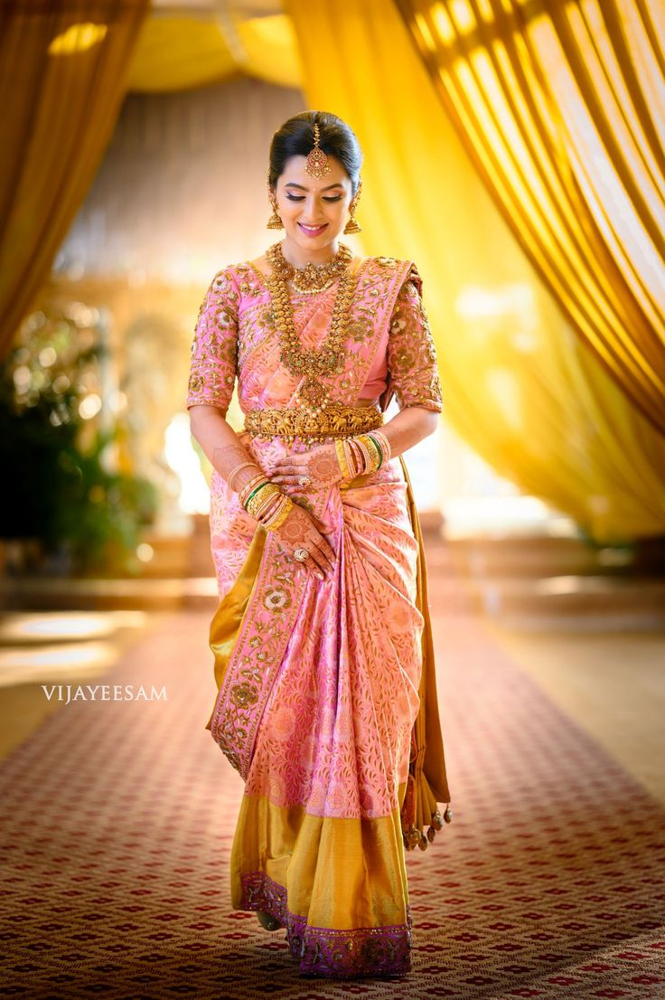
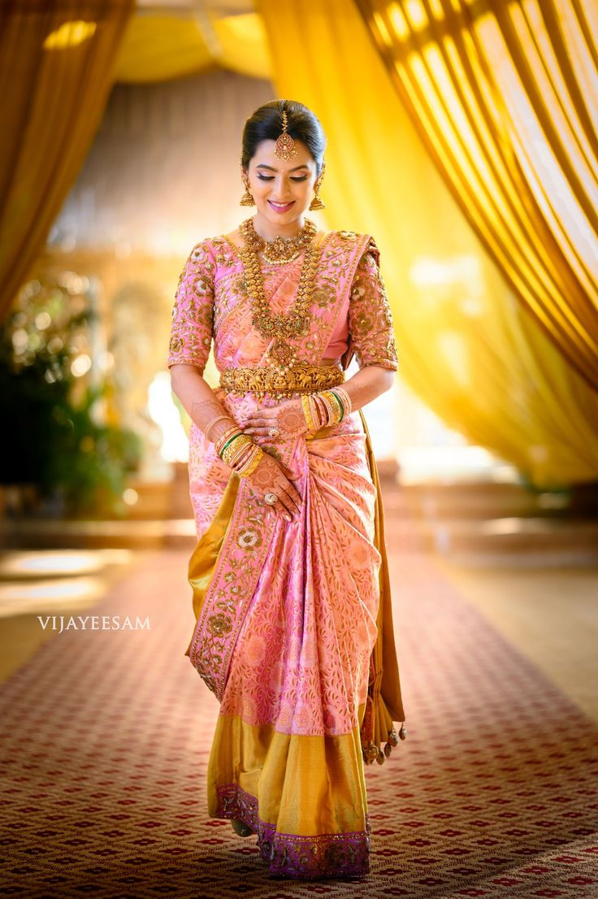

WELCOME TO BRIDAL SECTION
A bridal dress, often referred to as a wedding dress, is a special garment worn by a bride during her wedding ceremony. It is typically chosen to reflect the bride's personal style, cultural traditions, and the formality of the wedding. Here are some key aspects of bridal dresses:
1. Styles and Silhouettes:
Ball Gown: Features a full skirt and fitted bodice, creating a classic, fairy-tale look.
A-Line: Flows from the bodice to the hem in an A-shape, flattering most body types with its graceful silhouette.
Mermaid: Fitted through the bodice and hips, flaring out dramatically from the knees or mid-thigh.
Sheath: A slim, form-fitting design that follows the body's natural lines, often chosen for its elegant simplicity.
 
2. Fabrics:

2. Fabrics:
Silk: Luxurious and smooth, often used for high-end bridal gowns.
Satin: A glossy, smooth fabric that creates a rich, elegant look.
Chiffon: Lightweight and airy, ideal for a softer, flowing gown.
Lace: Adds texture and intricate detailing, often used for overlays or embellishments.
3. Color:
White: Traditionally associated with purity and innocence, it remains a classic choice.
Ivory/Cream: A softer alternative to white, often chosen for its warmer tone.
Blush/Pastel: Increasingly popular for modern brides seeking a non-traditional look.
4. Details and Embellishments:
Beading/Sequins: Adds sparkle and sophistication.
Embroidery: Provides intricate, often personalized designs.
Pearls: Classic embellishments that add elegance.

Veils: Worn over the head and often extending to the shoulders or beyond, available in various lengths and styles.
Tiara/Crown: Adds a regal touch, often adorned with jewels or pearls.
Boleros/Shrugs: Provide additional coverage and style, especially for cooler weather.
6. Cultural Variations:
Saree: In South Asia, brides often wear elaborately adorned sarees.
Kimono: In Japan, traditional bridal attire includes a white kimono known as a "shiromuku."
Qipao/Cheongsam: In China, a red qipao is sometimes worn for its auspicious connotations.
7. Customizations:
Many brides choose to have their dresses custom-made or altered to ensure a perfect fit and personalized style. This can include modifications to the length, neckline, or additional features.
A bridal dress is a central element of a wedding, often chosen with great care to match the bride's vision for her special day and to reflect her individual taste and cultural background.